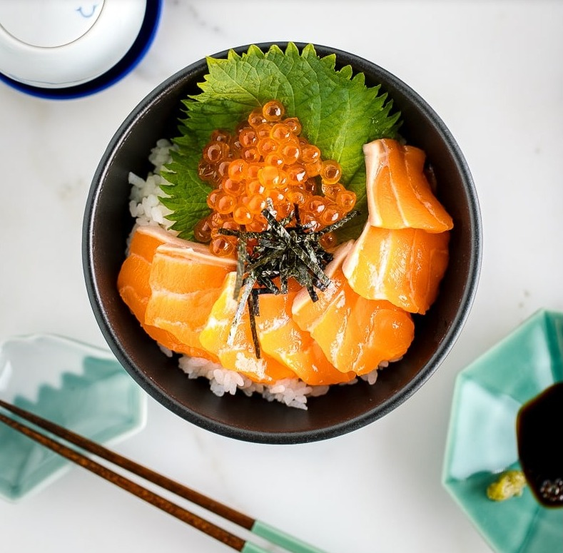

Donburi
Salmon sashimi Donburi, to be exact.

Description
Steamed Japanese rice topped with fresh sashimi-grade salmon, briny salmon roe (ikura), and crispy nori seaweed, this donburi bowl is light and super tasty. It's also one of the quickest fancy dinners that you can put together.
Ingredients
- Cooked Japanese short-grain rice: 250 g
- Sashimi-grade salmon: 150 g
- Ikura (salmon roe): 50 g
- Shredded nori seaweed: 30 g
- Soy sauce: to taste
- Wasabi: to taste
Steps of preparation
- Make steamed rice using your method.
- Slice salmon
Sashimi slicing tips
- Place the salmon block in the freezer for 5-10 min before slicing. This will firm up the flesh so it's easier to slice.
- You don't need a sashimi knife but make sure to use a really sharp knife. Do not use a serrated knife to slice sashimi.
- The simplest way to slice salmon sashimi is to cut the fish vertically. Pulling the knife towards you, start the cut from the base of the knife to the tip. This method is called hira-zukuri.
- Serve steamed rice, and let it cool off slightly. Meanwhile, you can set up other toppings.
- Assemble salmon sashimi, ikura, and shredded nori on top. Serve with soy sauce!
Return to main page